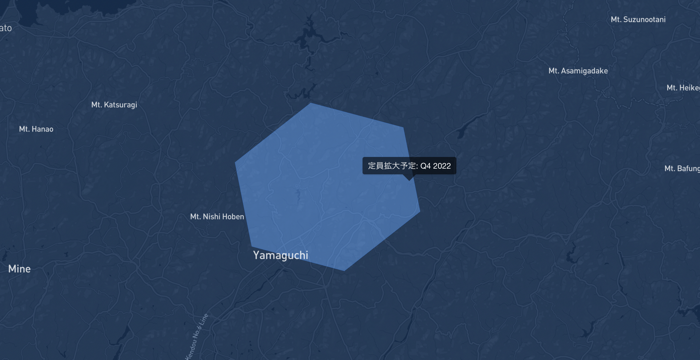

# pip install h3 --pre or with pip install 'h3==4.0.0b1'.
import h3
lat, lng = 34.21754433302865, 131.55764156077612
resolution = 5
target_h3 = h3.latlng_to_cell(lat, lng, resolution)
target_h3'8530cb47fffffff'# pip install h3 --pre or with pip install 'h3==4.0.0b1'.
import h3
lat, lng = 34.21754433302865, 131.55764156077612
resolution = 5
target_h3 = h3.latlng_to_cell(lat, lng, resolution)
target_h3'8530cb47fffffff'import pydeck as pdk
layer = pdk.Layer(
"H3HexagonLayer",
[{"hex": target_h3}],
pickable=True,
stroked=True,
filled=False,
extruded=False,
get_hexagon="hex",
get_line_color=[228, 0, 79],
line_width_min_pixels=2,
)
# Set the viewport location
view_state = pdk.ViewState(latitude=lat, longitude=lng, zoom=10, bearing=0)
r = pdk.Deck(layers=[layer], initial_view_state=view_state, map_style= 'light', tooltip={"text": "Count: {count}"})
r